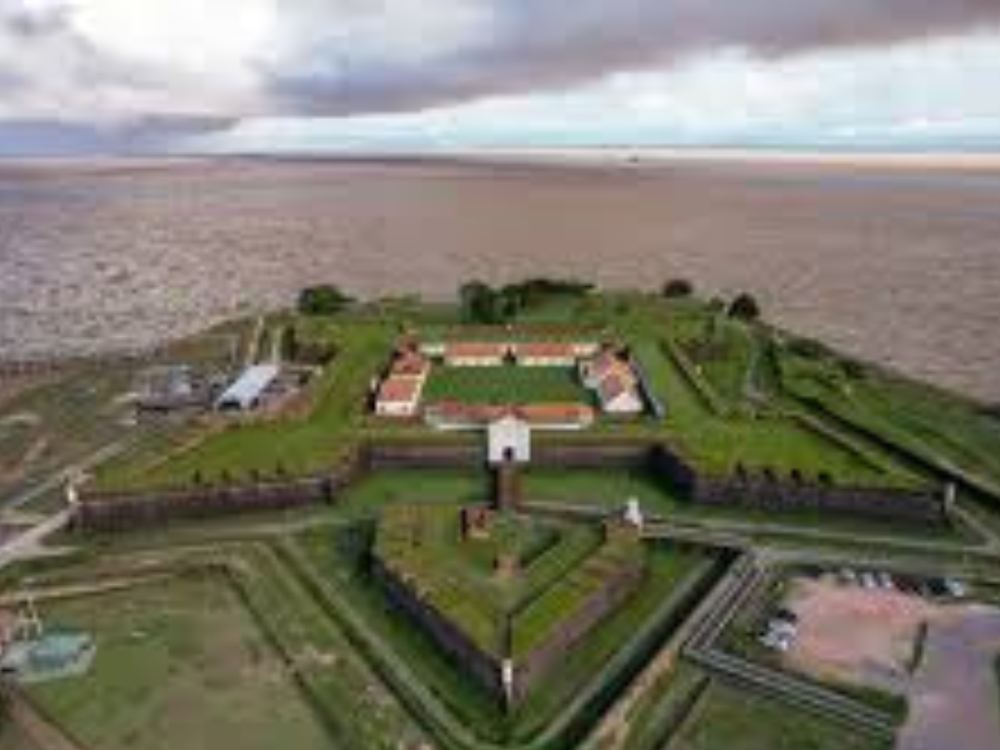

O Amapá é um estado localizado na região Norte do Brasil, conhecido por sua forte presença da floresta amazônica, grande riqueza natural e diversidade cultural. Faz fronteira com a Guiana Francesa, o estado do Pará e o Oceano Atlântico. Sua capital, Macapá, é famosa por ser cortada pela Linha do Equador, atraindo turistas ao monumento Marco Zero. O Amapá possui extensas áreas de preservação ambiental, o que contribui para a conservação da biodiversidade amazônica. A economia local é baseada no extrativismo, mineração, pesca, comércio e serviços, enquanto sua cultura reúne influências indígenas, africanas e portuguesas, refletidas nas festas populares, na música e na culinária típica da região.

voltar